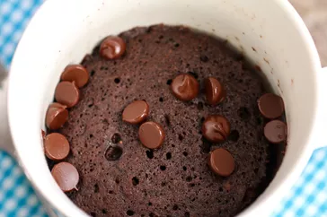

Chocolate Mug Cake

Description and Nutritional Facts
This chocolate mug cake is made in the microwave for a fudgy, chocolaty treat that is truly decadent. It's a great recipe for nights when I need a yummy dessert that's ready in less than 10 minutes! Add a few chocolate chips to make it extra rich and gooey.
Nutritional Facts
603 Calories
30g Fat
82g Carbs
7g Protein
Ingredients
- 1/4 cup all-purpose flour
- 1/4 cup white sugar
- 2 tablespoons unsweetened cocoa powder
- 1/8 teaspoon baking soda
- 1/8 teaspoon salt
- 3 tablespoons milk
- 2 tablespoons canola oil
- 1 tablespoon water
- 1/4 teaspoon vanilla extract
Steps
- Mix flour, sugar, cocoa powder, baking soda, and salt together in a large microwave-safe mug; stir in milk, canola oil, water, and vanilla extract.
- Cook in the microwave until cake is done in the middle, about 1 minute 45 seconds.
Variation
For a healthier version, use 1 1/2 tablespoons of plain unsweetened applesauce instead of canola oil, and use 3 tablespoons plus 1 teaspoon of water instead of milk.